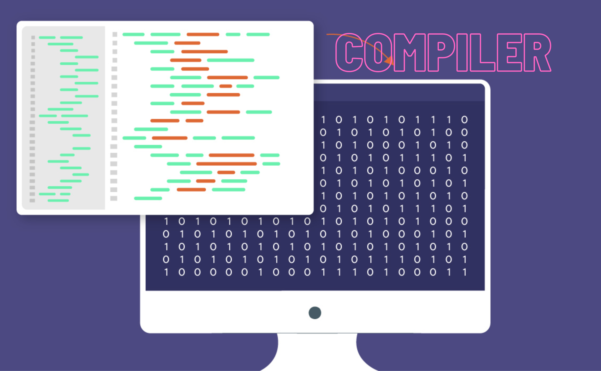

Code Compiler
A custom-built code compiler that utilizes LLVM to convert high-level code into optimized machine code for target architectures. This project includes lexical analysis, syntax parsing, semantic checks, and LLVM Intermediate Representation (IR) generation, followed by optimization and code generation, ensuring efficient and platform-specific executable outputs. The compiler supports a custom grammar, allowing users to write expressions, assign variables, and perform basic arithmetic operations.Java and JNI Integration
This project started out as a basic parser for a custom language using Java. But as the project evolved i decided to make a full fledged compiler making use of LLVM in c++.The project uses Java to handle front-end compilation stages, such as lexical and syntax analysis, where the Abstract Syntax Tree (AST) is generated. Using Java Native Interface (JNI), the AST is then passed to C++ code, where further processing takes place. The C++ module leverages LLVM to generate the Intermediate Representation (IR) from the AST. This JNI bridge allowed for seamless data transfer between Java and C++, combining the strengths of both languages for optimal compilation and code generation.
Learning from Reinventing the Wheel
While existing compilers like GCC and Clang provide robust solutions, building this compiler from scratch provided invaluable insights into the entire compilation process, from AST generation to LLVM IR creation. Reinventing the wheel isn't always a bad thing — it fosters a deep understanding of how different components interact, highlights performance trade-offs, and strengthens problem-solving skills by facing real-world challenges head-on.More about the project